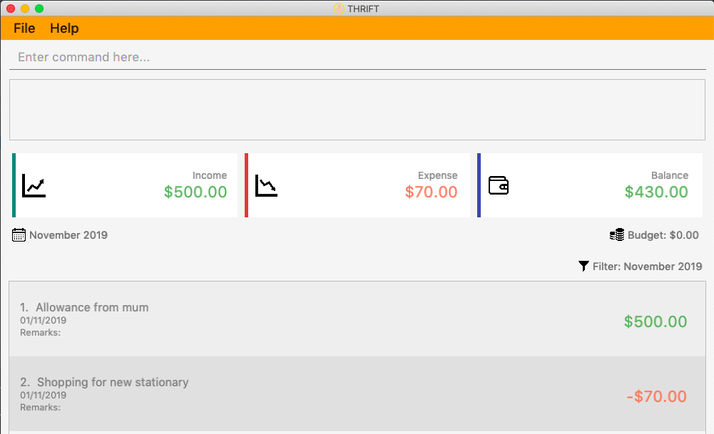
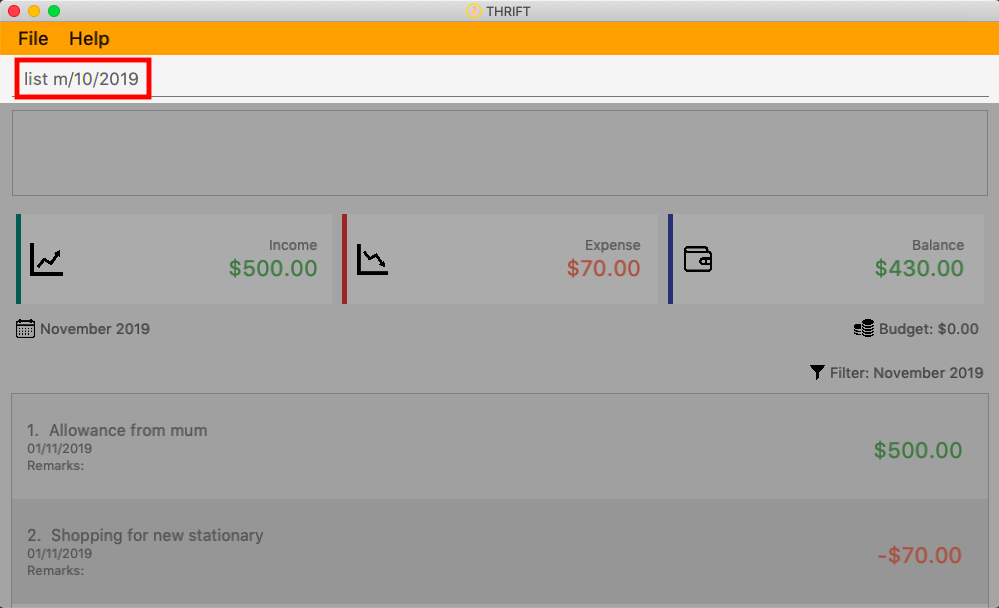
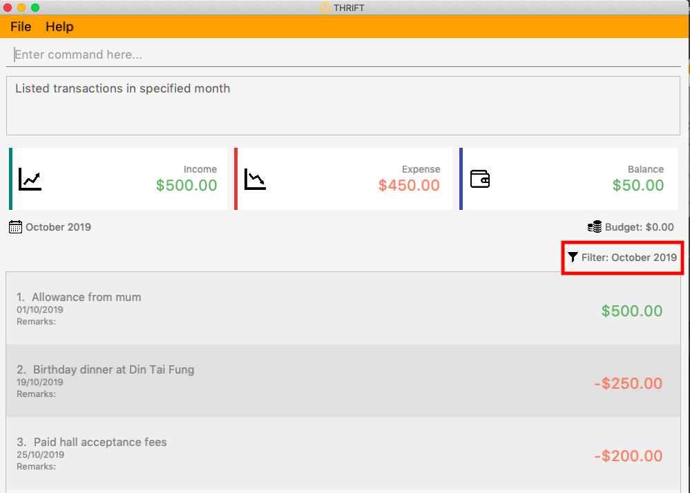

1. Introduction
This portfolio documents my roles and contributions to the team project THRIFT. This project was part of the requirements of a year two software engineering module, CS2103T, that I took as an undergraduate in NUS.
1.1 About the team
The THRIFT team consists of a group of 5 year 2 undergraduates which includes myself. In this project, I had the role of Process Analyst, and I was in charge of leading and coordinating business use-case modeling by outlining and delimiting the organization being modeled.
My team members and their various roles were: Lim Jia Hao (Team Lead), Lee Bo Qiang (User Experience Developer),
Melvin Ang (Software Architect) and Lye Jian Wen (Quality Assurance Manager). We had major yet different roles to
play in creating THRIFT and we worked closely together in order to ensure that THRIFT was successful.
1.2 Project: THRIFT
THRIFT is a finance tracker desktop application targeting money-conscious NUS students who wish to keep their spending in check.
1.2.1 Main features of THRIFT
As befitting a finance tracker, THRIFT allows its users to set a budget for each month and track incoming and outgoing transactions by adding and deleting them. Showing the remaining budget clearly in the user interface reduces the possibility of our users overspending their budget.
THRIFT helps our users better keep track of each transaction by allowing the transactions to be tagged. Tagging transactions with tags such as Food or Transport will improve visibility and help to categorise the transactions.
THRIFT is able to filter transactions by month. This enhances our users' ability to keep track of their spending over a long period of time, and allows them to compare monthly expenses. The find command is also very helpful in locating specific transactions, if a user wishes to do so.
Thrift is very user friendly, and users can make use of the undo and redo feature to help with any mistakes that have occurred when they use a command wrongly. Thus, even mistake-prone users are able to use THRIFT efficiently to track their finances.
1.2.2 Project requirements
As part of the project requirements, we had to work under the constraint that the application required the use of a command line interface (CLI). As such, the user would be able to interact with our app using a single line of text to execute any single command.
1.2.3 THRIFT’S user interface
The following image shows how THRIFT’s user interface looks like:

1.3 Background of THRIFT
THRIFT is morphed from the original AddressBook-Level3 application which allows users to add contacts to create a personalised list. My team and I have since transformed the application into a finance tracker to better suit our purposes and intended target audience of students.
1.4 Understanding this document
There are various text styles used in this portfolio and its usages are explained below:
| This symbol denotes information that you may want to take note of when using the application. |
The following text styles are only applicable to the section on the Summary of Contributions:
| m/MONTH |
Bold text indicates that it is a command, or a part of it. |
Tag
|
Bold text with mark-up indicates a class/package name. |
The following text styles are only applicable to the section on the User Guide:
list
|
Text with a grey highlight (called a mark-up) indicates that it is a command, or a part of it. |
The following text styles are only applicable to the section on the Developer Guide:
| m/MONTH |
Bold text indicates user input. |
parse
|
Text with grey highlight (called a mark-up) indicates that it is a method/variable name. |
Predicate
|
Bold text with mark-up indicates a class/package name. |
2. Summary of Contributions
This section provides a summary on the various contributions that I have made to THRIFT. My main role was to design and write the code for the list feature, and enhance it to allow filtering of transactions. In this section, these enhancements will be illustrated in detail.
2.1 Enhancements made
Major enhancements:
-
Added the ability to filter transactions.
-
What it does: The list command allows the user to filter the transaction list by a specific month.
-
Justification: It is a core feature to be able to show transactions from a single month as users want to track finances and would likely want to compare between months or look in more detail at the transactions in a particular month.
-
Highlights: I enhanced the existing list function by adding the functionality of filtering the transactions by using a
Predicate. This implementation can be easily extended, so if there are any future plans to implement filtering by, for example,Tag, there will not be extra difficulties faced in implementation.
-
2.2 Code contributed
Please follow these links to see my code: [Commits] [Pull requests] [RepoSense Code Contribution Dashboard]
2.3 Other contributions
-
Project management:
-
There were a total of 5 releases, from version 1.0 to 1.4. I contributed to each release, starting with project planning in the beginning and moving on to feature enhancement and testing in the later releases.
-
-
Enhancement to existing features:
-
Updated the list command to be able to accept an optional prefix m/MONTH to specify which month the user wishes to filter by. This also served to fix bugs faced with the initial implementation, where some features such as the budget or filter icon on the user interface was not able to update properly. (Pull request #206)
-
Wrote additional tests for existing features to increase coverage. (Pull request #214)
-
-
Documentation:
-
Community:
3. Contributions to the User Guide
The following section illustrates my ability in writing documentation to guide end-users on using the various features of THRIFT.
{Start of extract}
Listing transactions with the use of filters: list
By using the list command, you are able to list out all the transactions, or filter by month if you wish to do so.
Example usage
Imagine that you wanted to take a look at how much you spent and saved the previous month! For example, you want to show only the transactions that occurred in Oct 2019.
To list the transactions of Oct 2019:
-
The default interface shows all transactions for the current month, in this case Nov 2019.
 -
You can simply type list m/10/2019 into the command input and press Enter:
 -
Your transaction list will now show all transactions that were added in Oct 2019. The income, expense, and balance values in the UI will be updated to reflect the correct values for the month as well! Lastly, the filter icon will update to show you what filter is currently in use, in case you are ever confused about the current list of transactions shown.

{End of extract}
4. Contributions to the Developer Guide
The following section illustrates my ability in writing documentation to provide developers insights on the design of the application. It also showcases the technical depth of my current contributions to THRIFT, as well as an insight on a possible future extension.
{Start of extract}
Filtering transactions
The List command allows the user to bring up a list of Transactions, and filter it by month.
This feature is implemented by using a Predicate<Transaction> to filter the Transactions by month.
Implementation
ListCommand is instantiated by ListCommandParser#parse(String args),
which attempts to parse the various parameters supplied in args and return a ListCommand object.
The sequence diagram below shows how the execution of the list is like:
The following conditions will cause a ParseException to be thrown by the parser:
-
Incorrect syntax (i.e. having a prefix that does not refer to month)
-
Illegal values in parameters (i.e. special characters and symbols entered for a integer-only field)
| If the user input is incorrect due to the reasons above, the usage or parameter syntax will be shown. |
The scenario below shows an example of how the feature works:
Step 1. The user executes list m/10/2019 to filter the list to bring up transactions of October 2019.
Step 2. The ListCommandParser will parse the arguments using the method ListCommandParser#parse(String args).
Step 3. Since user input is correct and the arguments have been parsed, a new ListCommand object will be created by the
ListCommandParser.
Step 4. This ListCommand object will use a Predicate based on the specified month which is used to filter
through each Transaction.
Step 5. The final list of filtered transactions will be brought up. The income, expense, and balance values in the UI will be updated accordingly as well, to reflect the correct values for the filtered month.
The activity diagram below will give an overview of what is happening when the command is executed.
Design considerations
Aspect: Using Predicate to improve extendability of the feature in the future
-
Alternative 1 (current choice): Create a new
Predicatebased on the arguments each time.-
Pros: The filter feature could be added to and improved in the future to further accommodate new arguments other than month and tag, and still be able to filter by a combination of the different arguments.
-
Cons: Not as easy to implement.
-
-
Alternative 2: Use a fixed
Predicatewritten beforehand to filter the list for each argument.-
Pros: Straightforward to implement, a specific
Predicatecan be used for the specific argument. -
Cons: Not easily extendable as in the future if we want to filter by new arguments, we will have to write a new
Predicatefor each argument.
-
Eventually we may decide to use a combination of both alternatives as it is possible that different arguments are easier to implement using different methods.
Proposed extension
In the near future, we plan to enhance the filtering feature. We want to improve the list command to take in tags as a
possible argument similar to month, and thus allow for the possible filtering by tags as well. The design considerations mentioned
earlier was to facilitate this proposed extension, since we would require the use of a Predicate which will be
created using the tag in the argument as well. By doing so, we reduce the difficulty of enhancing the filtering feature in
the future. This would benefit the simplicity of the command and further enhance the user experience, for them to be able
to filter by a combination of both months and tags.
The image below shows how a possible future implementation of this feature could look like:
{End of extract}